GREEKS
Theta(θ)
The theta of an option, θ, is defined as the rate of change of the option price respected to the passage of time:
where π is the option price and t is the passage of time.
If τ=T-t, theta (θ) can also be defined as minus one timing the rate of change of the option price respected to time to maturity. The derivation of such transformation is easy and straight forward:
where τ=T-t is time to maturity. For the derivation of theta for various kinds of stock option, we use the definition of negative differential on time to maturity.
Derivation of Theta for Different Kinds of Stock Option
For a European call option on a non-dividend stock, theta can be written as:
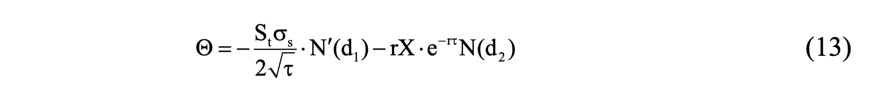
The derivation of (13) is
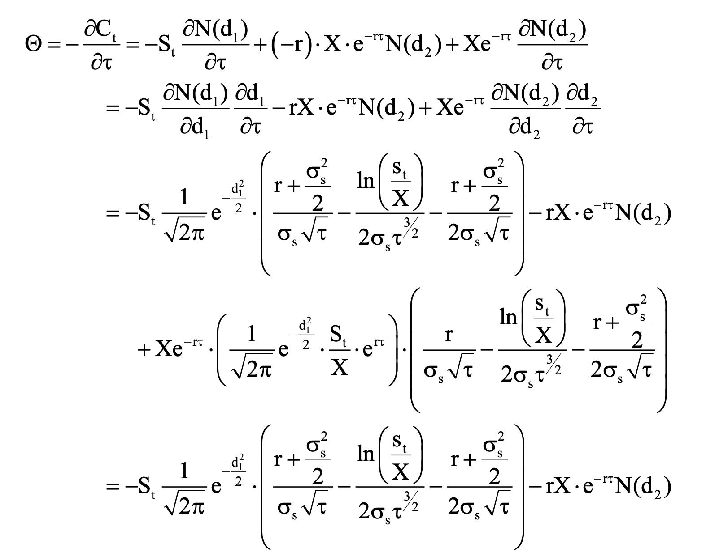
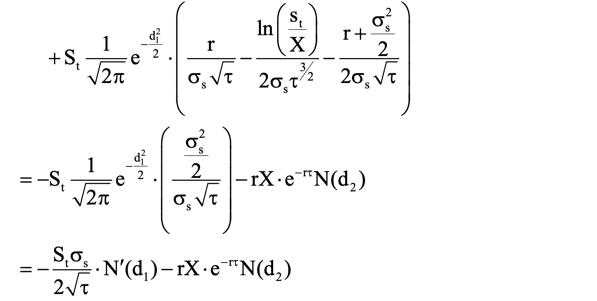
For a European put option on a non-dividend stock, theta can be shown as
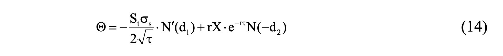
The derivation of (14) is
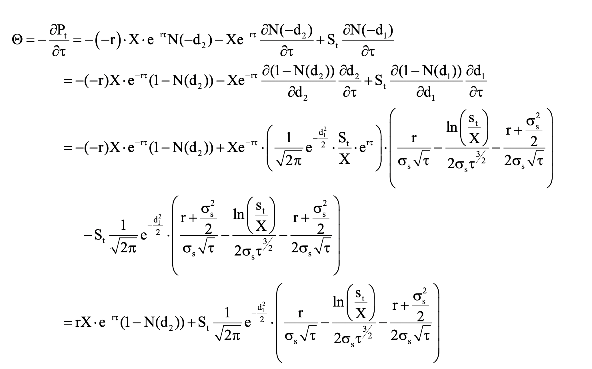
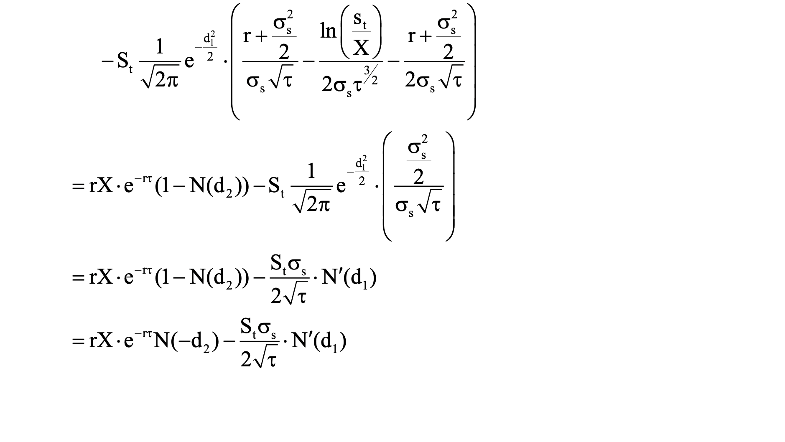
For a European call option on a dividend-paying stock, theta can be shown as
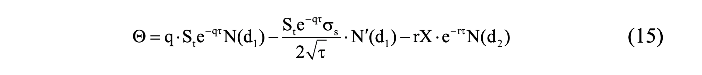
The derivation of (15) is
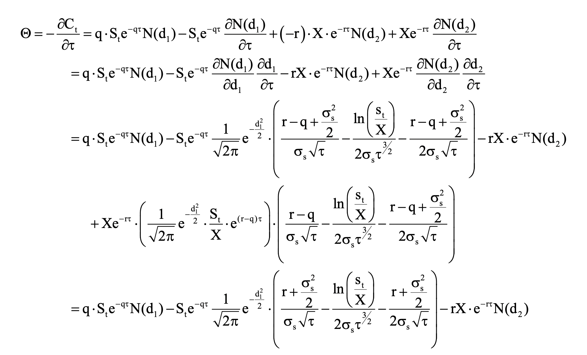
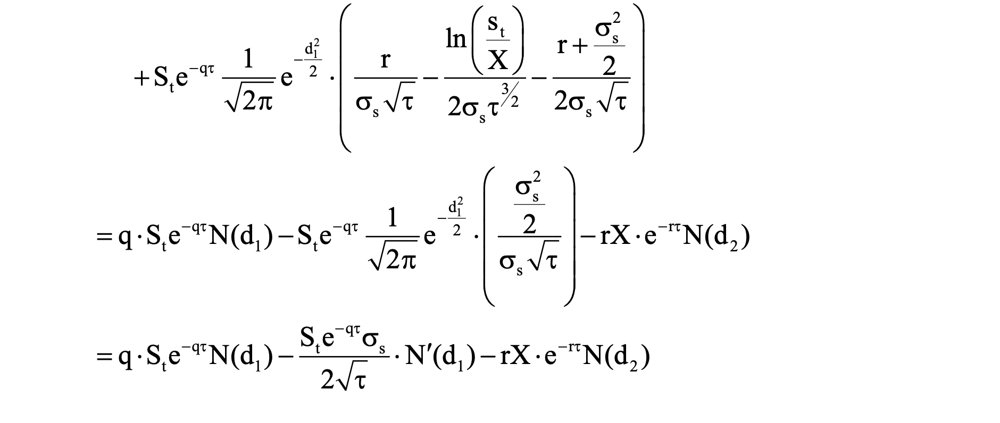
For a European call option on a dividend-paying stock, theta can be shown as
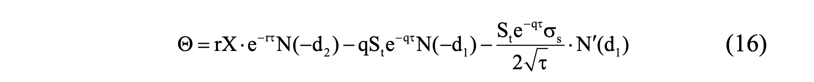
The derivation of (16) is
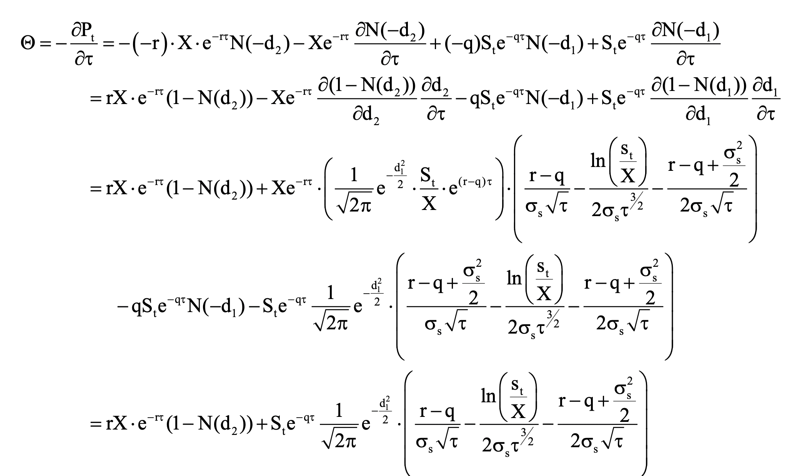
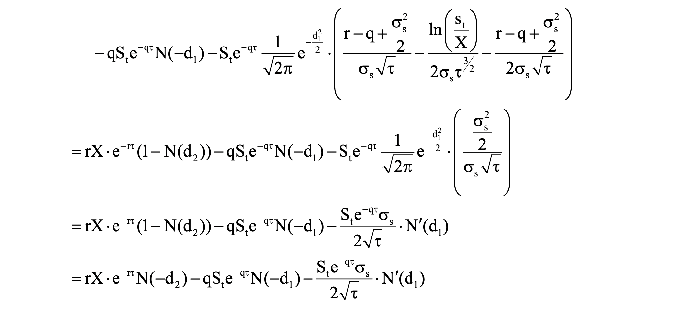
Application of Theta(θ)
The value of option is the combination of time value and stock value. When time passes, the time value of the option decreases. Thus, the rate of change of the option price with respective to the passage of time, theta, is usually negative.
Because the passage of time on an option is not uncertain, we do not need to make a theta hedge portfolio against the effect of the passage of time. However, we still regard theta as a useful parameter, because it is a proxy of gamma in the delta neutral portfolio. For the specific detail, we will discuss in the following sections.
Gamma(Γ)
The gamma of an option, Γ , is defined as the rate of change of delta respected to the rate of change of underlying asset price:

where Π is the option price and S is the underlying asset price.
Because the option is not linearly dependent on its underlying asset, delta-neutral hedge strategy is useful only when the movement of underlying asset price is small. Once the underlying asset price moves wider, gamma-neutral hedge is necessary. We next show the derivation of gamma for various kinds of stock option.
Derivation of Gamma for Different Kinds of Stock Option
For a European call option on a non-dividend stock, gamma can be shown as
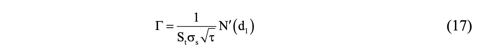
The derivation of (17) is
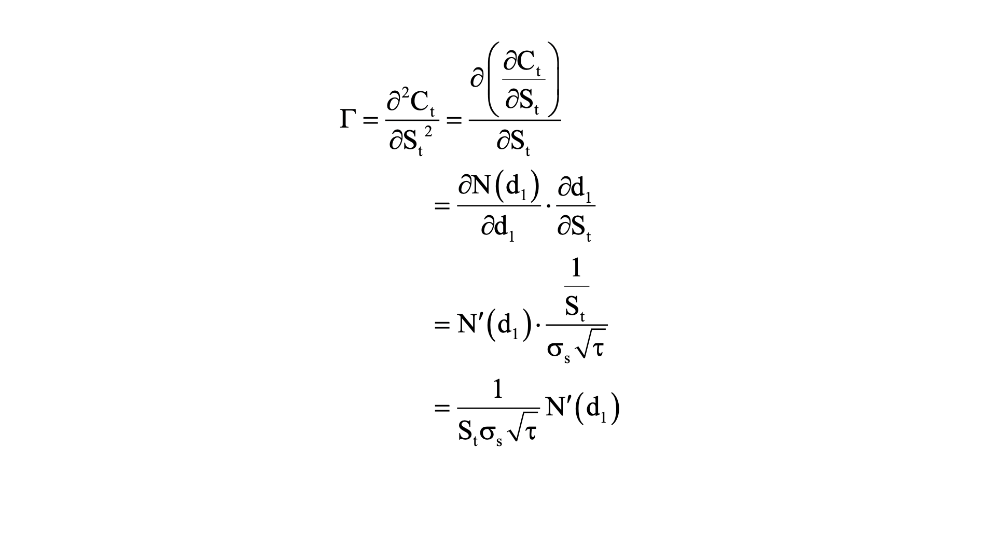
For a European put option on a non-dividend stock, gamma can be shown as
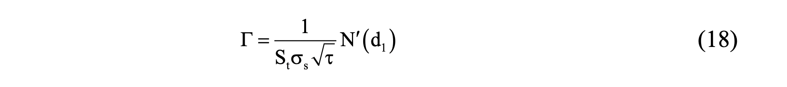
The derivation of (18) is
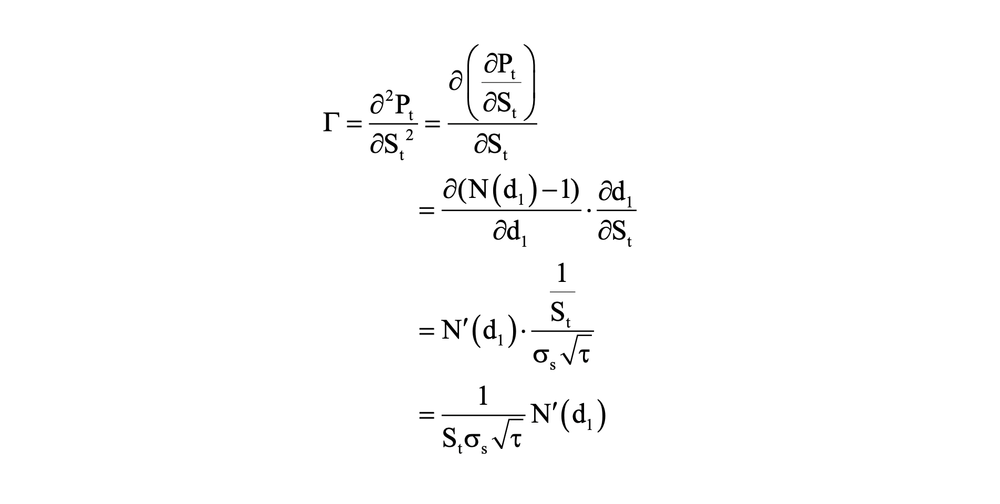
For a European call option on a dividend-paying stock, gamma can be shown as
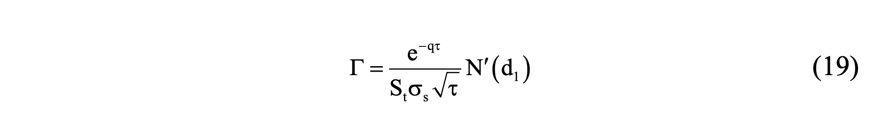
The derivation of (19) is
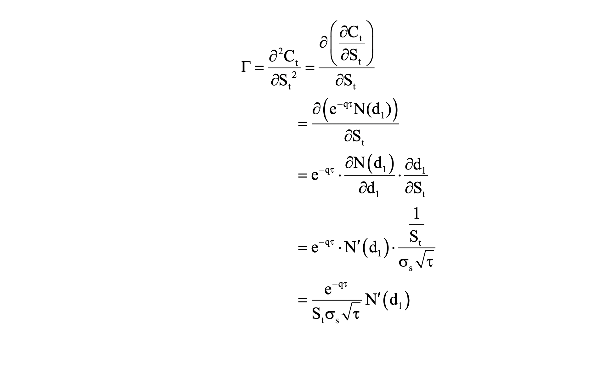
For a European call option on a dividend-paying stock, gamma can be shown as
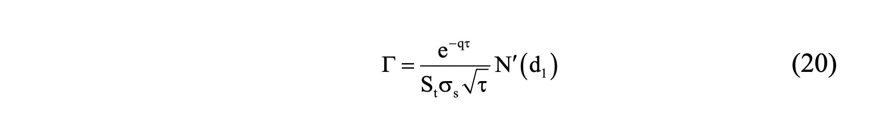
The derivation of (20) is
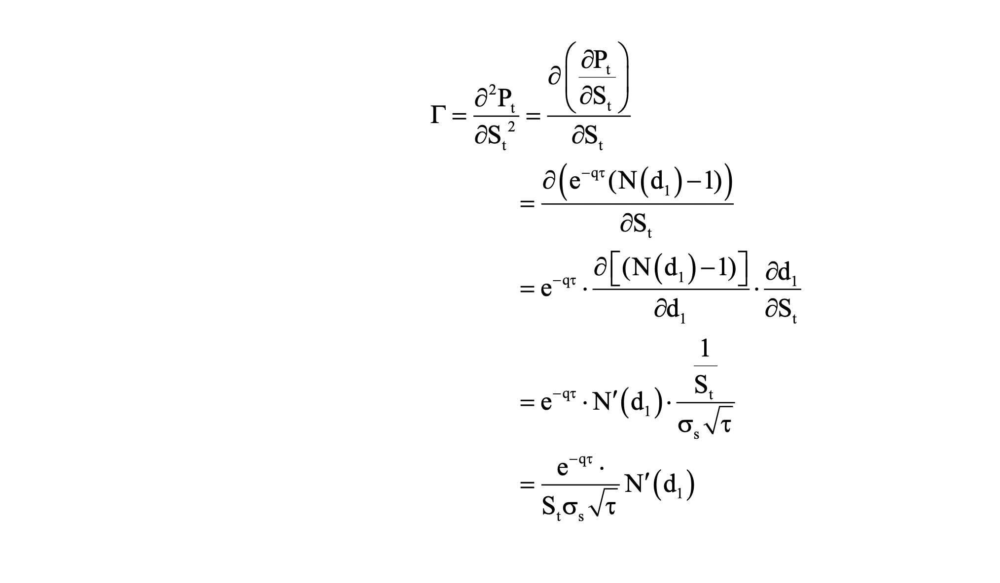
Application of Gamma(Γ)
One can use delta and gamma together to calculate the changes of the option due to changes in the underlying stock price. This change can be approximated by the following relations.
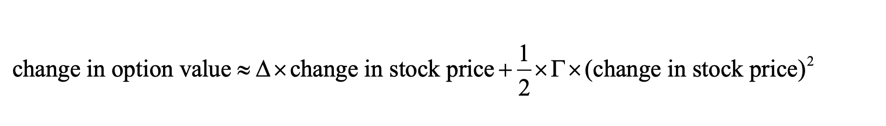
From the above relation, one can observe that the gamma makes the correction for the fact that the option value is not a linear function of underlying stock price. This approximation comes from the Taylor series expansion near the initial stock price. If we let V be option value, S be stock price, and S0 be initial stock price, then the Taylor series expansion around S0 yields the following.
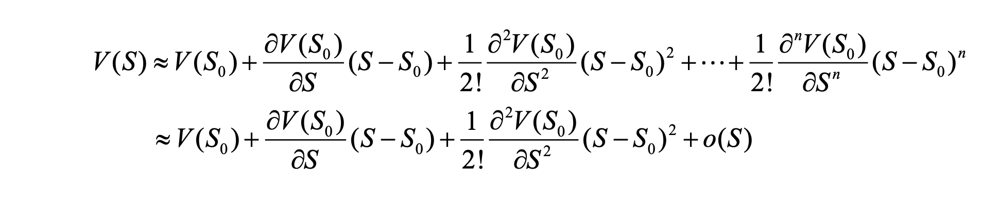
If we only consider the first three terms, the approximation is then,
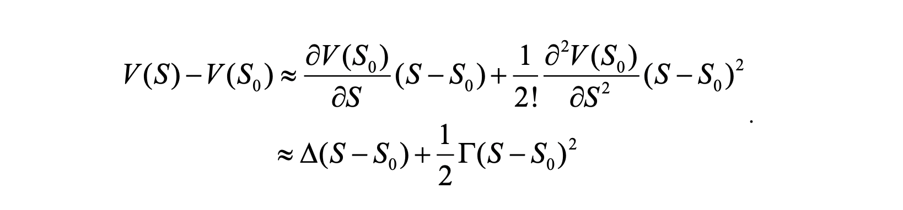
For example, if a portfolio of options has a delta equal to $10000 and a gamma equal to $5000, the change in the portfolio value if the stock price drop to $34 from $35 is approximately,
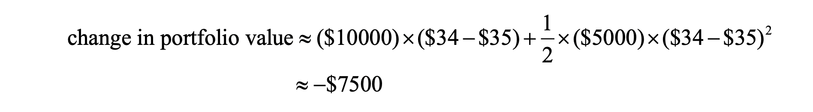
The above analysis can also be applied to measure the price sensitivity of interest rate related assets or portfolio to interest rate changes. Here we introduce Modified Duration and Convexity as risk measure corresponding to the above delta and gamma. Modified duration measures the percentage change in asset or portfolio value resulting from a percentage change in interest rate.
Using the modified duration,
we can calculate the value changes of the portfolio. The above relation corresponds to the previous discussion of delta measure. We want to know how the price of the portfolio changes given a change in interest rate. Similar to delta, modified duration only show the first order approximation of the changes in value. In order to account for the nonlinear relation between the interest rate and portfolio value, we need a second order approximation similar to the gamma measure before, this is then the convexity measure. Convexity is the interest rate gamma divided by price,
Convexity = Γ/P
and this measure captures the nonlinear part of the price changes due to interest rate changes. Using the modified duration and convexity together allow us to develop first as well as second order approximation of the price changes similar to previous discussion.
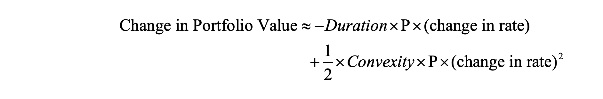
As a result, (-duration x P) and (convexity x P) act like the delta and gamma measure respectively in the previous discussion. This shows that these Greeks can also be applied in measuring risk in interest rate related assets or portfolio.
Next we discuss how to make a portfolio gamma neutral. Suppose the gamma of a delta-neutral portfolio is Γ , the gamma of the option in this portfolio is Γ0 , and ω0 is the number of options added to the delta-neutral portfolio. Then, the gamma of this new portfolio is
ω0Γ0 + Γ
To make a gamma-neutral portfolio, we should trade ω0* = -Γ/-Γ0 options. Because the position of option changes, the new portfolio is not in the delta-neutral. We should change the position of the underlying asset to maintain delta-neutral.
For example, the delta and gamma of a particular call option are 0.7 and 1.2. A delta-neutral portfolio has a gamma of -2,400. To make a delta-neutral and gamma-neutral portfolio, we should add a long position of 2,400/1.2=2,000 shares and a short position of 2,000 x 0.7=1,400 shares in the original portfolio.